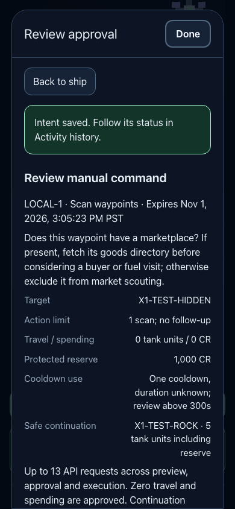
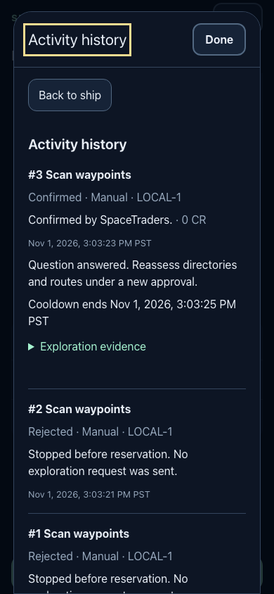
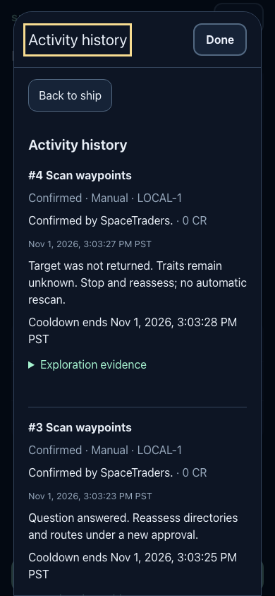
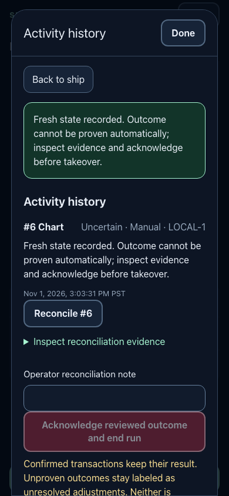
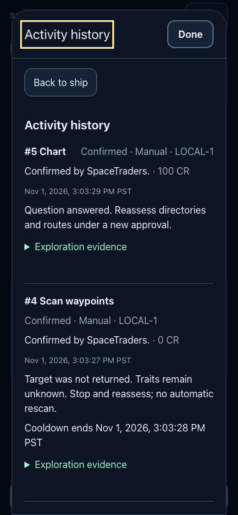
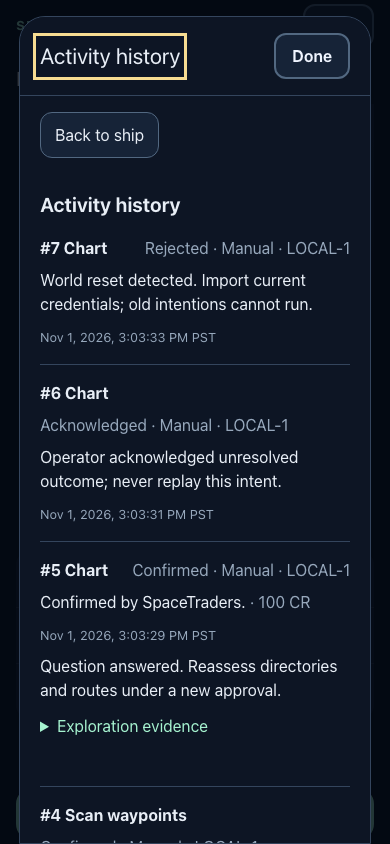
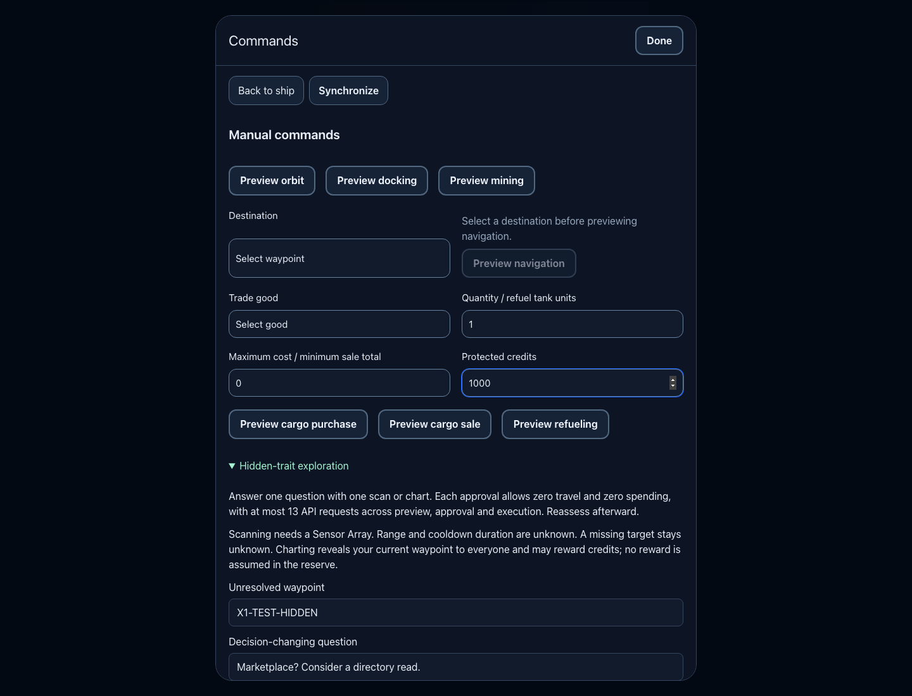

EXP01 · ISSUE #51 · LOCAL FIXTURES ONLY
Bounded waypoint scans and charts
One owned approval answers one unresolved marketplace or shipyard question. Zero travel and zero spending are authorized. Missing scan coverage stays unknown.
Tested implementation 2fe309c07f02e9102c5cea390479b73bf9747059
Base 5c1990696811554d03a752dae2cfec6259fcc36c
353 / 1,869Full tests / assertions passed
32 / 158EXP01 cases / assertions passed
1 POSTTwo competing workers, duplicate delivery
Frontend vulnerability audit unverified. The canonical pnpm audit rejects the existing multi-document lockfile. An owned application-only copy also triggers a pnpm parser failure. Dependency pins are unchanged. Composer audit reports no advisories.
Verified local behavior
| Boundary | Evidence |
|---|
| Ownership and CSRF | Foreign owner/target, old-reset target, and missing-token denial cases. |
| Capability and continuation | Sensor, crew, power, state, cooldown, reserve, fuel, and stale-price failures reject before POST. |
| Uncertain outcomes | Lost or malformed responses never replay. A later chart or cooldown does not prove attribution. |
| Stop and reset | Preflight races, pending cancellation, reserved settlement, and reset rejection pass. |
| Adjacent workflows | Real MVP/automation worker suites and scouting/trade browser journey pass. |
| Rendering | 1440px and 390px Chromium; light OS preference, dark app; detected America/Los_Angeles presentation. |
Inspected browser evidence
These are real local application screenshots with synthetic game responses and owned SQLite state. The final journey completed after the build, with no browser errors.

A bounded approval
The decision-changing question, zero travel and spending, credit reserve, cooldown uncertainty, and physical continuation appear before approval.

Confirmed scan
The result records an answered question and a localized cooldown deadline.

Partial coverage
An omitted target stays unknown and does not authorize another scan.

Lost response
Read-only reconciliation preserves uncertainty and requires operator review.

Chart result
The synthetic chart reward and resulting evidence persist in Activity history.

Reset rejection
A world change rejects the pending action and archives the agent.
Controls and evidence sources
Desktop controls · Separate listing and scan evidence

Contracts and limits
The official v2.3.0 schemas and source hashes are recorded in official-contracts.json. Orbit and expired cooldown are conservative client requirements. Scan range and duration remain unknown. The review threshold cannot cap a server cooldown.
No live game calls, real credits, credential changes, deployment, remote publication, or independent review were performed. No new migration or executor was added.
Integration into the existing PR
PR #52 is linked to this thread. Its preparation branch was read without merging it. Apply the local implementation and evidence commits to that existing PR branch after reconciling current main, then rerun verification. Main advanced to 87760a4 with an unrelated documentation-only brief during this run.